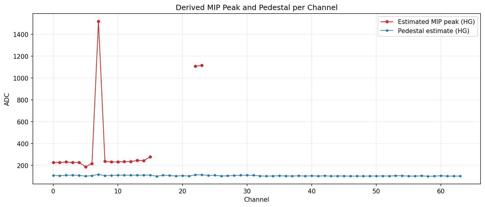

ADC per Channel (HG)

Derived MIP Peaks

Rate Time Series (UTC)

Rate Time Series (America/Los_Angeles)

Service Monitoring

| run_start_event_utc | 2026-02-19T21:40:34.949205864+00:00 |
| run_stop_event_utc | 2026-02-20T00:59:41.250632968+00:00 |
| events | 22643 |
| channels | 64 |
| total_samples | 1449152 |
| run_duration_s_from_events | 11946.301427 |
| trigger_rate_hz_avg | 1.8953983488834665 |
| integrated_hit_rate_hz_avg | 121.30549432854185 |
| mip_peak_channels_with_estimate | 18 |
| mip_peak_hg_mean_adc | 401.4237288687782 |
| mip_peak_hg_std_adc | 397.5961386929182 |
| vmon_mean | 56.99996655770681 |
| imon_mean_ma | 0.0070372977956583704 |
| board_temp_mean_c | 49.64659290922806 |
| det_temp_mean_c | 25.32275584611516 |
| fpga_temp_mean_c | 54.046735395189 |
| hv_temp_mean_c | 46.04973598189589 |
| AcquisitionMode | N/A |
| TriggerLogic | N/A |
| HG_Gain | 25 |
| LG_Gain | 55 |
| Pedestal | 100 |
| HV_Vbias | 57 |
| TD_CoarseThreshold | 450 |
| QD_CoarseThreshold | 250 |
